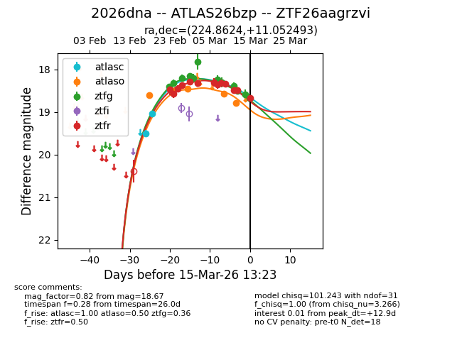
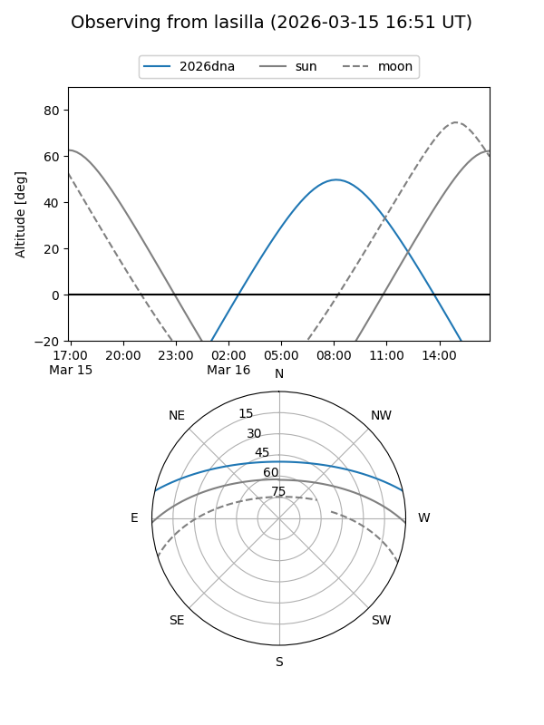
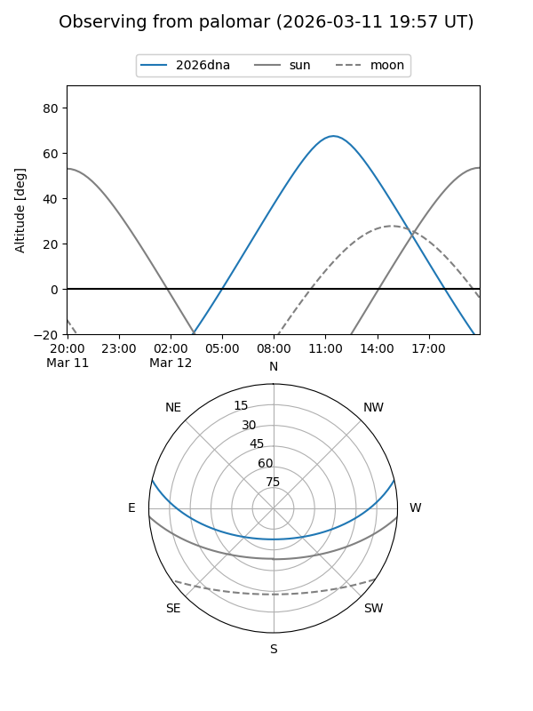
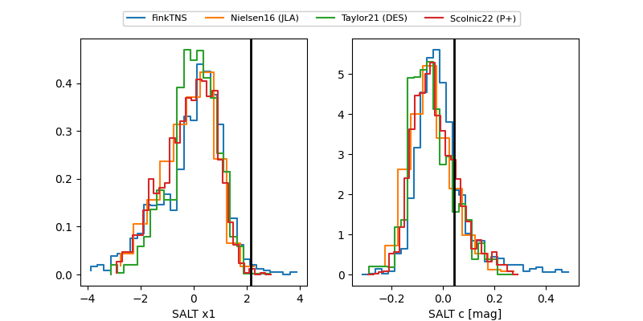

2026dna
Target 2026dna at 2026-03-15 13:25
Aliases and brokers:
FINK: link
Lasair: link
ALeRCE: link
TNS: link
YSE: link
alt names
ZTF26aagrzvi (ztf,fink_ztf)
2026dna (tns,yse)
ATLAS26bzp (atlas)
Coordinates:
equatorial (ra, dec) = 224.8624,+11.05249
equatorial (HMS+DMS) = 14:59:26.98,+11:03:08.97
galactic (l, b) = (11.0508,+55.90872)
Flags:
Photometry:
last atlasc=18.48, atlaso=18.80, ztfg=18.68, ztfr=18.67
3 atlasc, 5 atlaso, 12 ztfg, 13 ztfr detections
Lightcurve

Visibility


Additional plots
